최근 1년간 누적 취수량(4개월 단위)
캐쉬백(15개월 누적취수량 1500L 이하)
| 1~15개월 | 1,200 L | - |
| 16~31개월 | 1,200 L | - |
| 32~43개월 | 1,200 L | 적립완료 |
| 44~55개월 | 1,200 L |
일 평균 음용량 (개인이 음용량을 입력한 기준)
주 일
전기 사용량
최저 소비전력 슈퍼S정수기는 당사 에너지효율 3등급 정수기대비 약 70% 전기료가 절감됩니다.최근 6개월(2015.10 ~ 2016.03)
월 평균 : 1,500원(20KW)
주거용 주택전력(고압) 기준으로 산정되었습니다. (200kW사용기준)
코크 살균 (횟수)
최근 7일
일일 평균 : 4회
